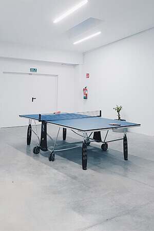

Software apps will definitely become a crucial part of our everyday routines in
the current digital age. Irrespective of whether they are web-based or mobile
applications, software is the vital engine driving our interaction with
technology. Nevertheless, not every software is manufactured the same way. The
distinctive ones that make an impact and connect with users are typically
generated from an intentional and considerate design process. It is crucial to
understand the advantages of developing bespoke software.
The user-centered design in software development focuses on the process that
emphasizes the objectives, requirements, and satisfaction of the user.
User-Centered Design: An Overview

An iterative approach known as “user-centered design” entails thoroughly
comprehending the needs of the end-user when creating software. It highlights
the significance of including users at every stage of the software development
lifecycle through analysis, inspiration, assessment, and execution. Intuitive,
effective, and entertaining software experiences that meet user expectations and
needs are the aim.
How Effective is Software Development Facilitated by User-Centered Design?
The main focus of the success of customized software development is to place the
user’s requirements and preferences first while developing the software.
User-centered design (UCD) prioritizes this by engaging in exhaustive research
and interaction with the targeted audience. Using the knowledge acquired,
software is created that specifically responds to user needs, resulting in an
enjoyable and engaging user experience.
User-centered design in software development plays an important role in flagging
potential usability problems early in the software development process. This
process makes sure that it lowers the costly adjustments, but it also improves
the quality of the final output. At its core, UCD nurtures an approach focused
on the user.
User-Centered Design and Its Importance in Software Development
The most crucial part of software development is building a user-centric design
that attracts consumers and offers a smooth experience.
- Excellent User Experience: Software that is easy to use, efficient,
and packed with interactive features may be created using the benefits of
user-centered design in software development. The outcome could influence
customer satisfaction and loyalty.
- Improved Usability: The early phases of the software development life
cycle
are when usability barriers may be identified and removed, thanks to the
benefits of user-centered design in software development. Long-term time and
money savings from this prophylactic approach can be significant. Software
that is simple to use makes learning and using it easier, resulting in more
productivity and efficiency.
- Better Product Adoption: Users are more inclined to utilize
user-friendly
software that fits their demands. It may result in a rise in income and
sales.
- Put Users First: Describe the fundamental ideas of user-centered
design,
highlighting the significance of empathy and target audience knowledge.
Describe the methods developers may use to interview users, collect their
opinions, and include users in all aspects of the design and development
process.
- Identifying User Needs: Describe how to identify user needs and
comprehend
user processes. Stress the need to do user surveys, interviews, and
usability tests to learn crucial information about user demands and pain
spots.
- Designing Intuitive User Interfaces: Explore how user-centered design
may
help create UIs that are simple to understand. Emphasize the value of ease
of use, accessibility, and clarity in the user interface (UI) to ensure
customers are able to discover and interact with the application.
- Lower Development Dangers and Expenses: Describe how the benefits of
user-centered design in software development may assist in lowering
development risks as well as expenses. Developers may save costs from rework
and increase overall development effectiveness by spotting usability
concerns early in the design phase.
- Exploring How User-Centered Design: Promotes greater user happiness
and
participation can help you improve customer satisfaction and involvement. By
making software that meets users’ expectations and preferences, developers
may enhance the user experience and encourage long-term usage.
Why does User-Centric Design Matter?
The user experience refers to the perception and satisfaction of individuals when
interacting with or encountering a product. It encompasses efforts to enhance
usability and simplify usage.
This entails ensuring that the design, structure, and objectives of the product
are readily understandable to all users. Furthermore, user experience aims to
create pleasant and enjoyable interactions, fostering a positive connection
between the user and the product.
As humans naturally prefer products that bring value to their lives, it is
crucial to meet their expectations. When users develop a liking for a product,
they tend to utilize it frequently and recommend it to others, leading to
increased business opportunities for the company.
Here are the reasons why user-centric design is important-
- Optimized User Experience: Systems designed with the demands of the
market being targeted in mind should be easy to operate, instinctive, and
suitable for that market. By asking consumers for input throughout the
development process, designers may pinpoint issue areas, examine user
habits, and build solutions that meet their needs.
- User Engagement Rises: Customers are more likely to interact
alongside a product that meets their demands and is easy to use. Usage,
adoption, and customer happiness may all grow as a consequence.
- Decreased Development Costs: By including early customer feedback,
designers may identify and fix problems upfront in the creating process.
This can save both time and money.
- Increased Productivity: When users can readily discover and use a
product, their likelihood of being productive increases. This may lead to
improved output and efficiency, raising the product’s value for customers.
- Competitive Advantage: Customers typically have access to a wide
range of identical items in today’s industry. The business can set itself
apart by mainly creating products and focusing on design that is
user-centric and will meet its client’s requirements and needs.
End users are put at the user-centered design in the software development
process by the human-centered approach known as user-centered design (UCD). The
demands, preferences, and pain points of users may be understood by developers
in order to produce software that not only satisfies functional requirements but
also offers a smooth and pleasurable user experience.
Putting User-Centered Design Principles into Practice
Let’s look at how to successfully implement user-centered design principles now
that we are aware of its advantages for software development:
- User Analysis: To start, identify your target market. To learn more
about users’ wants, preferences, and pain spots, conduct user research.
Evaluations, inquiries, testing with users, and data analysis may be used in
this process. By adapting research techniques to each client’s unique needs,
IntelliSource, a customized software company that creates bespoke software,
shines in this vital step.
- Construct User Personas: Make user personas using the data from your
study. These are made-up people who stand in for various user groups.
Personas aid in the understanding and empathy of users, assisting the
development team in choosing options across the process of designing and
developing.
- Iteration and Prototype Design: To evaluate and enhance your concepts
rapidly, start with low-fidelity prototypes. As your concept gets more
refined, it slowly moves to prototypes with high fidelity. Each phase should
be driven by feedback from customers so you can make small adjustments.
- Usability Evaluation: Evaluations of usability must be conducted
often. Ask consumers to use your app, then watch how they behave. Determine
the problems, the misunderstandings, and the potential for change. According
to these results, revise and refine the layout you created.
- Accessibility: Ensure that your software is usable by everyone,
including individuals with impairments. In addition to increasing your user
base, following requirements for accessibility is frequently required by
law.
- Feedback Loops and Reliability: Keep your software’s design
components and user interfaces uniform. To continuously improve the user
encounters, develop loops for input with users throughout growth and
development as well as following launch.
- Constant Development: Implementing user-centered design principles is
a never-ending procedure. After the program is released, keep getting
feedback from customers and updating it. Adapting to changing consumer
requirements and technological developments is essential for longevity.
- Teams that Collaborate Across Functions: Make sure that the
development staff is composed of individuals with a variety of expertise,
from programmers and designers to customer researchers and UX specialists. A
multidisciplinary UCD approach is fostered through collaboration across
these fields.
- Documentation and Support Focused on Users: To ensure that users are
getting what they want out of your program, supply clear, user-focused
documentation along with support resources. This consists of manuals for
use, frequently asked questions and logical assistance features.
The leading provider of bespoke software, IntelliSource, is aware of how
important UCD is in producing products that customers actually connect with.
They provide various software development services that put the requirements
and needs of the user first.
Software development serviceslike IntelliSource can build unique software
solutions that genuinely resonate with customers by applying UCD principles,
which promotes long-term success and client loyalty.
The success of a software product may be made or broken by the user-centered
design approach, which is not just a trendy term. The advantages are
obvious: higher customer happiness, lower costs, more productivity, and a
competitive advantage.User-centered design (UCD) is not simply a choice;
it’s a must in a digital age where customer experience is everything.


.png)